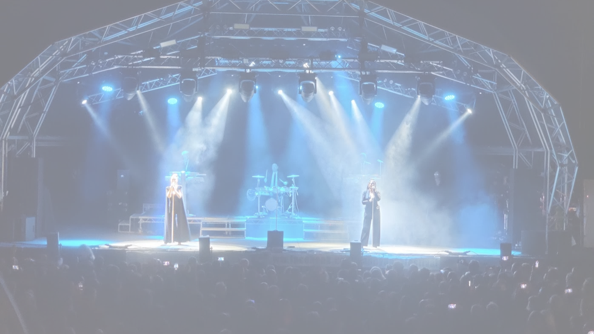
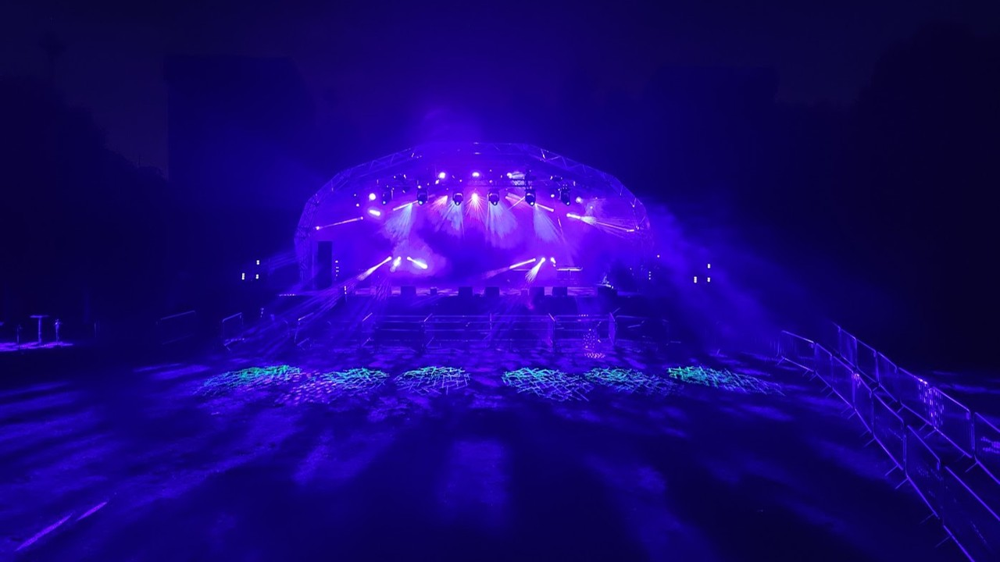

"Happy Days Festival" (Aug 2022) | rigging | programming
Age 16, Happy Days was my first large-scale live event. Working with Lightwave Productions, I helped rig, program and operate the festival. Being immersed in this environment for the first time was an amazing feeling and I learned loads, as well as being able to put into practice the techniques I'd already been developing at school.

